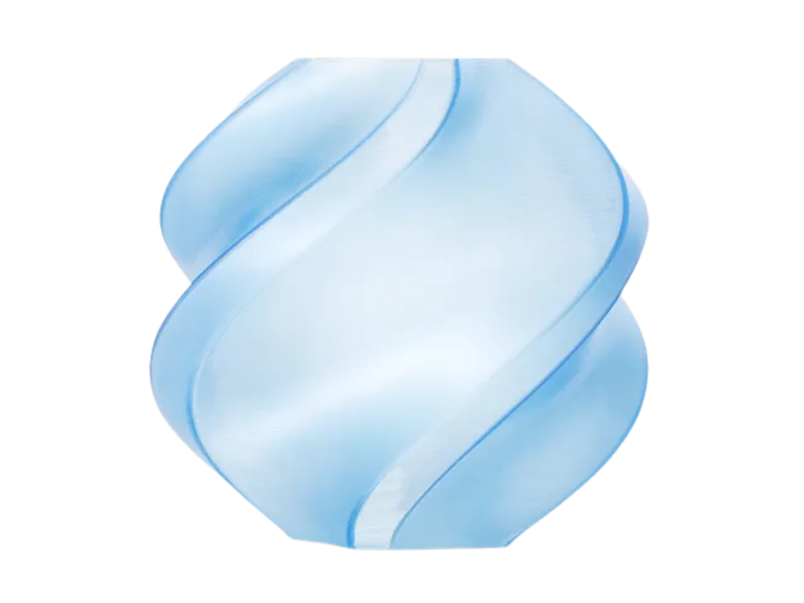

Arduino Uno R3
The Uno R3 is the CanSat's microcontroller platform. It is used to run mission code, coordinate sensor readings, manage timing, and provide a clear, testable control layer for the payload.
Altitude's satellite is built around an Arduino Uno R3 controller, supporting payload components, and a repeatable 3D-printing workflow using Bambu Lab hardware.
The payload starts with embedded control, sensing, communications, and compact mechanism parts before the structure is manufactured around them.
The Uno R3 is the CanSat's microcontroller platform. It is used to run mission code, coordinate sensor readings, manage timing, and provide a clear, testable control layer for the payload.

The BMP390 pressure sensor supports altitude and pressure measurements during testing and flight, giving the team data for descent profile analysis.

The ADXL335 tracks acceleration across three axes, helping the team understand motion, vibration, and handling loads on the payload.

The LoRa radio module is planned for long-range communication tests, supporting telemetry links between the CanSat payload and the ground workflow.

The SG90 servo provides compact actuation for mechanism prototypes and controlled movement tests, such as release or recovery experiments.
The printer, Automatic Material System hardware, and engineering filaments are used to prototype, test, and refine the physical CanSat structure.

The X2D printer manufactures the CanSat structure, fixtures, test pieces, and revised CAD iterations. Fast printing helps the team test fit and strength before finalising a design.

The AMS 2 Pro and two AMS HT dryers are part of the fabrication process. They manage multi-material printing and keep engineering filaments dry for consistent structural parts.

ASA Aero is used for lightweight structural printing where the team wants a stronger engineering material while keeping printed parts efficient.

TPU 90A gives the team a flexible material option for shock-absorbing, compliant, or grip-like parts during mechanism and fit testing.

PETG CF is used for carbon-fibre-reinforced parts where stiffness, dimensional stability, and a clean engineering finish are useful.

PLA HS is a high-speed PLA used for rapid prototyping, letting the team print early CAD iterations quickly before moving to specialist materials.
The project moves from model to print to electronics integration, with notebook evidence collected along the way.
CAD defines the CanSat body, internal mounts, access points, and recovery interfaces.
The X2D, AMS 2 Pro, and AMS HT dryers produce prototypes and final parts with controlled PLA HS, ASA Aero, TPU 90A, and PETG CF handling.
The Arduino platform and payload electronics are fitted, wired, and checked against the physical layout.
Testing, failures, changes, and final decisions are recorded in the engineering notebook.